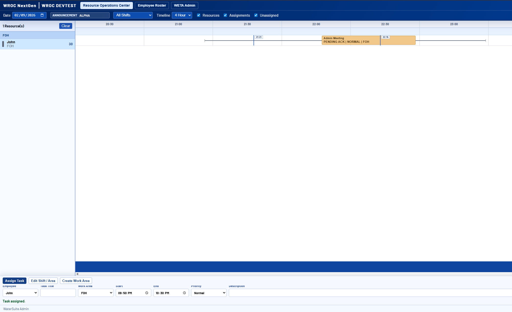
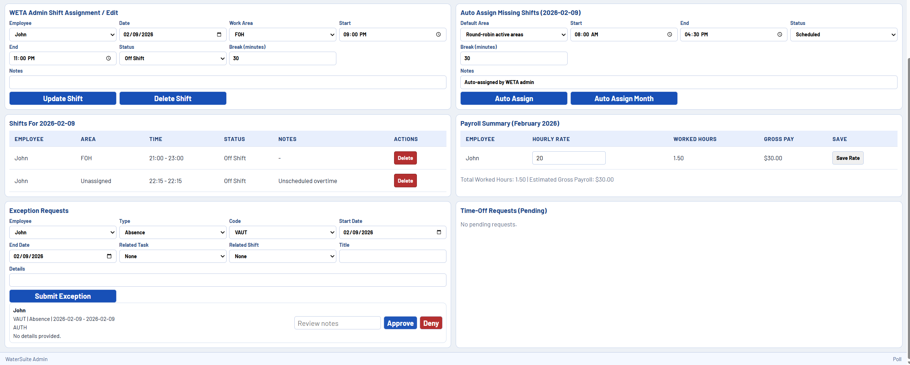

Timeline Command Surface
Visual shift and task bars with right-click actions for fast edits, messaging, and NOTE task dispatching.
Every feature is designed to shorten decision cycles, reduce assignment mistakes, and give supervisors and employees one trusted operational source of truth.
Visual shift and task bars with right-click actions for fast edits, messaging, and NOTE task dispatching.
Database-level rules ensure tasks stay inside employee shift windows, preventing out-of-policy work plans.
Direct thread-style messaging and note-based task delivery keeps priorities clear in the same system of record.
Worked minutes and hourly rates connect directly to scheduling activity for immediate labor-cost visibility.
Screenshots from WROC NextGen in action.


Request a tailored demo and we'll walk through your shift model, assignment process, and messaging policy live.